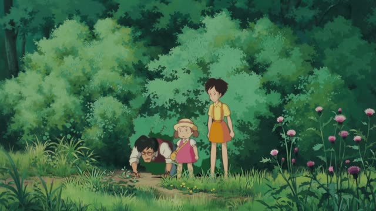
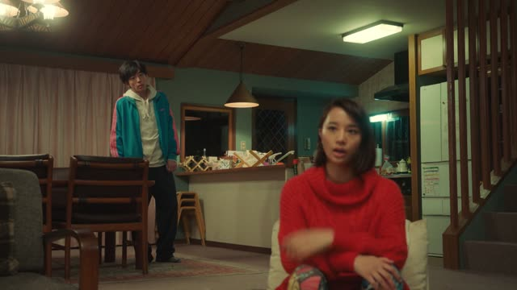

う-Verb (Past)
| Ends in | Verb | Polite | Casual |
|---|---|---|---|
| う つ る | 買う | 買いました | 買った |
| く | 書く | 書きました | 書いた |
| ぐ | 急ぐ | 急ぎました | 急いだ |
| ぬ ぶ む | 飲む | 飲みました | 飲んだ |
| す | 出す | 出しました | 出した |
| odd one | 行く | 行きました | 行った |
Same meaning: "did". Polite is always the same: the last sound moves to i, then ました. Casual depends on the last sound.

Shirokuma Cafe · Season 1, Episode 3
だから言ったのに
"I told you so."
To say a う-verb already happened, casually: the last sound changes, then comes た. Which change depends on that last sound. 言う (to say) ends in う, so it becomes 言った. Verbs ending in う, つ or る all go to った.
On this card, something went wrong and the speaker had warned about it. The sentence answers "Did you say anything?": yes, I said it, and still...
Polite: same move as before ます, u → i, then ました: 言いました. No sound changes there.
Quartet · Episode 1
バディソープ買いましたよ
"I bought body soap."
The polite past is the same for every う-verb: swap ます for ました, with no sound changes. On this card, 買います → 買いました.
Quick Examples
A friend offers you a coffee. You just had one.
もう飲んだ。
"I already had one."
飲む → 飲んだ. Verbs ending in む, ぶ or ぬ go to んだ.
CasualA coworker asks what you did on the weekend.
京都に行きました。
"I went to Kyoto."
行く → 行きました. u → i, then ました.
PoliteA friend asks if you messaged the teacher about tomorrow.
うん、昨日書いた。
"Yeah, I wrote [to them] yesterday."
書く → 書いた. く goes to いた, ぐ goes to いだ (泳ぐ → 泳いだ).
CasualYour friend shows up late and asks how long you waited.
三十分待ちましたよ。
"I waited thirty minutes, you know."
待つ → 待ちました. Casual: 待った (つ goes to った).
PoliteWith and without
手紙を書く。
"I write a letter." (or "I'll write")
手紙を書いた。
"I wrote a letter." く changes to い, then た.
手紙を書きました。
Same meaning. く → き, then ました.
学校に行いた。
行く is the one odd verb: it ends in く but goes to 行った, not 行いた.
Examples from Media
Nausicaä of the Valley of the Wind
アスベルからみんな聞きました。
"I heard everything from Asbel."
聞く → 聞きました: u to i, then ました.
Goblin Slayer · Episode 1
あの、教わったとおり防具を買いました。
"Um, I bought armor like you taught me."
買う → 買いました.
Tekkonkinkreet
お風呂にも入りました。
"I took a bath, too."
入る is a う-verb that looks like a る-verb: 入ります, 入りました.

New Atashin'chi · Episode 1
分かったからシーッ！
"Okay, I get it, so shh!"
分かる (to understand) → 分かった. It ends in る, so った.

My Neighbor Totoro
さっきは大きな木のとこに行った。
"Earlier I went to the big tree."
行く → 行った. 行く is the one odd verb: never 行いた.

Quartet · Episode 4
実家 帰った。
"She went back to her parents'."
帰る → 帰った.
Vinland Saga · Episode 19
俺は泣いたよ。
"I cried."
泣く → 泣いた.

Shirokuma Cafe · Episode 38
海にも行ったね。
"We went to the sea too."
行く is the odd one: 行った.
Further Reading
A Dictionary of Basic Japanese Grammar
Appendix 1, Basic Conjugations (Group 1 verbs) · pp. 576–577
Tae Kim's Guide to Japanese Grammar
Past Tense · Past tense for u-verbs
Polite Form and Verb Stems · Using 「～ます」 to make verbs polite